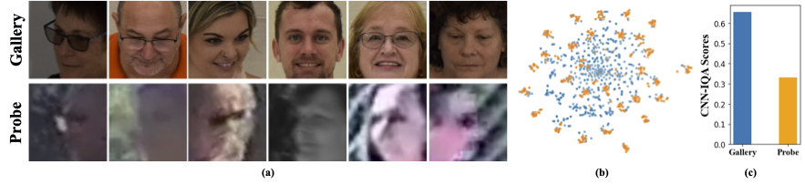
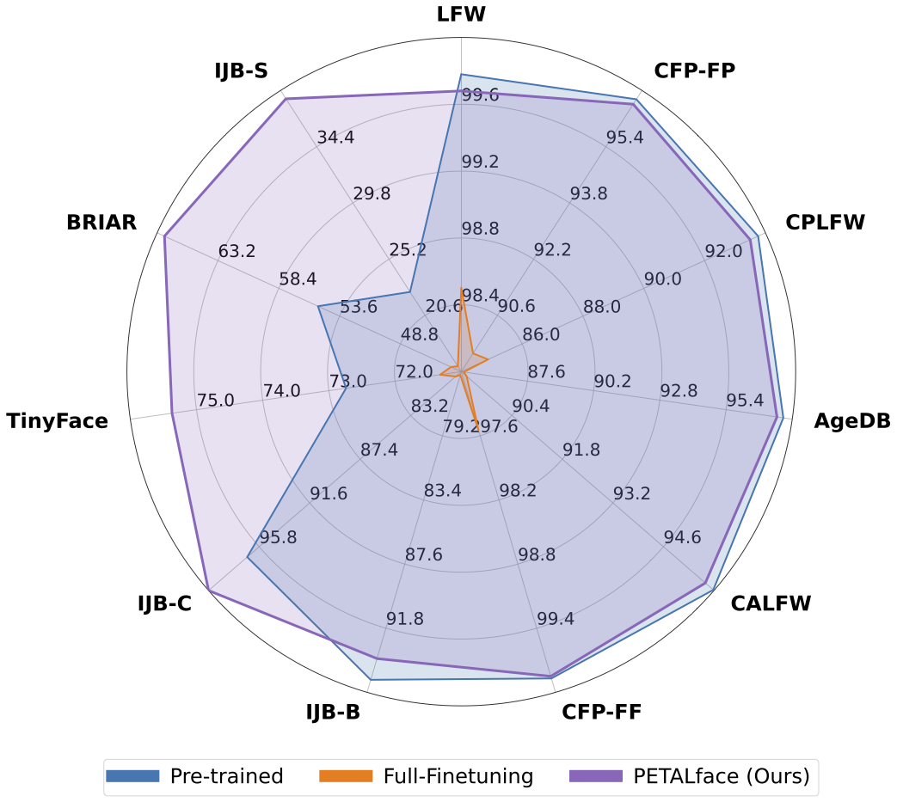

Motivation & Contribution
Figure 1. (a) An illustration of the gallery and probe images from low-resolution dataset (BRIAR). Gallery images usually are high quality compared to the probe images. (b) t-SNE plot for the gallery and probe images of the BRIAR dataset. (c) Average CNN-IQA scores of gallery and probe images for 50 identities of the BRIAR dataset.
Figure 2. The proposed PETALface: a parameter efficient transfer learning approach adapts to low-resolution datasets beating the performance of pre-trained models with negligible drop in performance on high-resolution and mixed-quality datasets. PETALface enables development of generalized models achieving competitive performance on high-resolution (LFW, CFP-FP, CPLFW, AgeDB, CALFW, CFP-FF) and mixed-quality datasets (IJB-B, IJB-C) with big enhancements in low-quality surveillance quality datasets (TinyFace, BRIAR, IJB-S)
Low-resolution datasets contain images with poor clarity, making it challenging to extract meaningful discriminative features essential for face recognition and verification. Moreover, low-resolution datasets are usually small, with a limited number of subjects, as curating them requires significant time, effort, and investment. Existing methods force the learning of high-resolution and low-resolution face images in a single encoder, failing to account for the domain differences between them. From Figure 1(a), 1(b), and 1(c), we observe that high-quality gallery images and low-quality probe images belong to distinct domains, and require separate encoders to extract meaningful features for classification. A naive approach to adapting pre-trained models to low-resolution datasets is supervised full fine-tuning on these datasets. However, as mentioned, low-resolution datasets are small in size, and updating a model with a large number of parameters on a small low-resolution dataset results in poor convergence. This makes the model prone to catastrophic forgetting and we see a drop in performance on high-resolution and mixed-quality datasets, as shown in Figure 2. With the above motivation,
- We introduce the use of the LoRA-based PETL technique to adapt large pre-trained face-recognition models to low-resolution datasets.
- We propose an image-quality-based weighting of LoRA modules to create separate proxy encoders for high-resolution and low-resolution data, ensuring effective extraction of embeddings for face recognition.
- We demonstrate the superiority of PETALface in adapting to low-resolution datasets, outperforming other state-of-the-art models on low-resolution benchmarks while maintaining performance on high-resolution and mixed-quality datasets.
PETALface Framework

Overview of the proposed PETALface approach: We include an additional trainable module in linear layers present in attention layers and the final feature projection MLP. The trainable module is highlighted on the right. Specifically, we add two LoRA layers, where the weightage α is decided based on the input-image quality, computed using an off-the-shelf image quality assessment network (IQA).
Results
Table 1. The models are fine-tuned on train set of TinyFace and tested on several high-resolution, mixed-quality and TinyFace dataset. PETALface adapts to the low-resolution data achieving SOTA results, preserving its performance on other datasets. [BLUE] indicates the best results for models trained on WebFace4M.
Table 2. The models are fine-tuned on the BRIAR dataset and tested using BRIAR Protocol 3.1 and the IJB-S dataset. [BLUE] indicates the best results for models trained on WebFace4M.